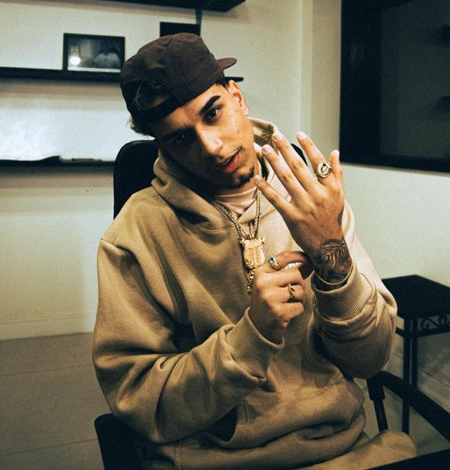
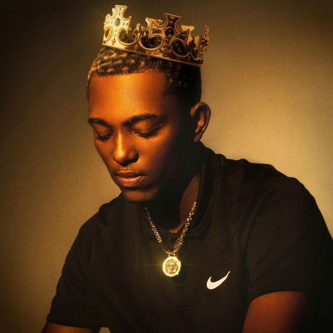
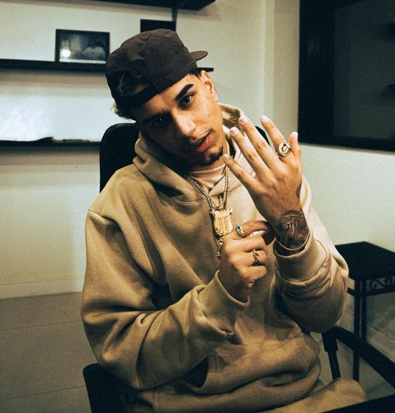
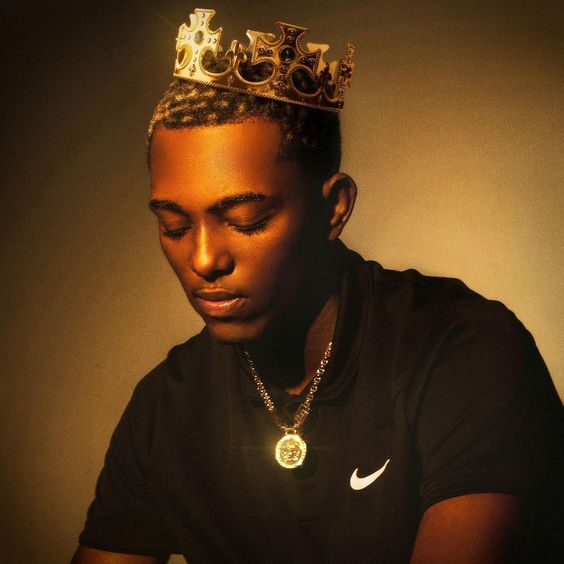

O gênero de música Trap surgiu no começo dos anos 2000 como um subgênero do Rap, seu berço é localizado no sul dos EUA, mais especificamente Atalanta. A palavra “Trap” é uma gíria americana usada para designar localidades perigosas, geralmente periferias que sofrem com a desigualdade social e estão cercadas por gangues. É em meio a este ambiente que surgem as letras do Trap, relatando a realidade vivida por estas localidades, assuntos como política e direitos humanos são semelhantes ao estilo do Rap, porém o Trap também acrescenta uma pegada mais agressiva, como se fosse um estilo Punk se comparado ao Rock, por retratar também sobre drogas, sexo, crimes e violência.
O novo estilo de música derivado do Rap surgiu no Brasil por volta de 2014, artistas como Naio Rezende e Raffa Moreira disputam de forma saudável o título de pioneiros do Trap no País. Mas sendo sincero, pouco importa a origem do estilo musical, a verdade é que nos últimos anos o povo brasileiro ganhou muito com os sons de Trap e os excelentes artistas que tem aparecido em nosso País.
Mas foi a partir de 2017 que o trap brasileiro realmente explodiu, graças ao sucesso de artistas como Raffa Moreira e Matuê. Raffa Moreira, também conhecido como "Young Raff", é um dos principais nomes do trap brasileiro e é considerado um dos pioneiros do movimento. Ele começou a produzir música em 2012 e, aos poucos, foi conquistando espaço na cena underground do rap nacional, e foi ai que diversos artistas começaram a surgir na cena do trap no Brasil, porém agora inovando o que tinha sido criado em atlanta a anos atrás e trazendo o ritmo brasileiro a esse estilo tão inovador.
Hoje, o trap brasileiro é um dos gêneros mais populares do rap nacional, com uma cena vibrante e diversa que conta com artistas de todos os cantos do país. O som do trap brasileiro é caracterizado por batidas pesadas, letras ousadas e uma mistura única de influências nacionais e internacionais. E com artistas como Raffa Moreira e Matuê liderando o movimento, o futuro do trap brasileiro parece mais promissor do que nunca.
Segundo dados da plataforma de música Spotify Brasil, desde 2016 até o começo de 2022 o Trap cresceu em média 61% ao ano, consumida principalmente pela juventude brasileira e contando com inúmeros Hits próprios que vão muito além de apenas curtição, mas sim um estilo de vida e um viés político que já não mais pode ser chamado como o futuro da música, mas sim o presente por já estar influenciando e tocando em todos os cantos do País.